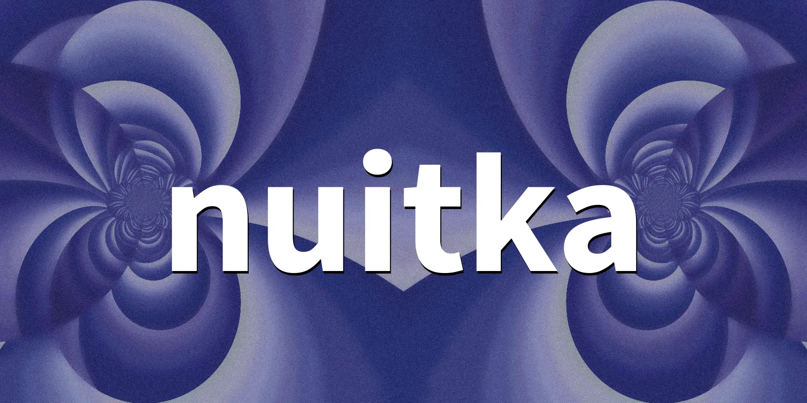

Nuitka for Python
 # Nuitka 实现原理与功能点（面向开发者）一句话总结：Nuitka 通过静态分析把 Python 模块转成调用 CPython API（libpython）的 C 源码，并与其自带的 C 运行时代码一起用系统 C 编译器编译成可执行文件/扩展模块，在保证与 CPython 语义兼容的前提下减少解释器循环开销，从而获得加速并便于打包发布。
实现原理（How it works）
- 源码到 AST：读取你的 Python 源码，建立与 CPython 兼容的语法树表示。
- 优化/重写：做一系列静态优化（如常量折叠、消除不必要的动态开销、特定语义重写），尽量在保持语义完全一致的情况下移除解释开销。
- 代码生成：把优化后的内部表示转为 C 源码，并链接 Nuitka 自带的静态 C 运行时代码。
- 编译与链接：调用系统 C 编译器（GCC/Clang/MSVC），链接到本机的 libpython（即 CPython 运行时）生成目标产物（可执行文件或扩展模块）。
- 运行时：最终程序在 CPython 运行时环境中执行（通过 libpython），因此对标准库及大多数第三方 C 扩展模块保持高兼容性。
参考：
- Nuitka User Manual — Nuitka translates the Python modules into a C level program that then uses libpython…
- Nuitka User Manual（系统需求，C11 或旧版需 C++03 编译器）
- Nuitka Developer Manual（设计/架构综述）
编译流水线（简版）
- 解析 Python 源码 → AST
- 语义重写与静态优化（减少动态查找/函数调用等不必要开销）
- 生成 C 源码 + 链接 Nuitka 自带运行时代码
- 使用本机 C 编译器编译并与 libpython 链接 → 产出 .exe / .so/.pyd
教程/背景阅读：
- Nuitka Tutorial – Creating a Python Exe for Distribution
- DeepWiki: Nuitka（概述：转成 C，使用 libpython 执行，保持与 CPython 行为一致）
功能点与适用场景
- 加速运行：通过 AOT 编译和静态优化减少解释器循环与动态分派带来的开销；加速效果取决于代码特征（函数调用密集、属性查找多、纯 Python 热路径往往收益更明显）。
- 原生产物：输出本机可执行文件或 Python 扩展模块，便于部署与集成。
- 打包发布：
- 可打包为独立目录（--standalone）或单文件（--onefile）分发。
- 兼容标准库与大多数第三方 C 扩展。
- 兼容 CPython：使用 libpython 执行，语义保持与 CPython 一致，减少“行为差异”的风险。
- 跨平台与编译器支持：Windows/macOS/Linux；现代 Python 版本需要支持 C11 的 C 编译器（旧 Python 可用 C++03 编译器）。
注意与局限
- 非 JIT：不改变 GIL 行为；IO 密集型场景加速有限；高度动态特性（如大量
eval/exec）可运行但优化空间有限。 - 编译成本与体积：构建时间增加；--onefile 初次启动有解包开销；产物体积通常大于纯脚本。
- 工具链依赖：需要合适的本机编译器与对应的 Python/系统头文件环境。
参考链接（官方/权威优先）
- Nuitka User Manual（官方）
- Nuitka User Manual — 系统需求（官方）
- Nuitka Developer Manual（官方）
- Nuitka Tutorial – CodersLegacy（教程）
- DeepWiki: Nuitka（综述/整理）
本次搜索使用的关键词
- “Nuitka how it works”
- “Nuitka implementation principle 原理”
- “Nuitka libpython CPython API”
- “Nuitka generates C or C++”
- “Nuitka developer manual AST optimization code generation C11”
Nuitka 的原理是一边做静态分析一边把 Python 代码转译成调用 CPython API（libpython）的 C 源码，连同它自带的运行时代码一起用本地 C 编译器编译成可执行文件/扩展模块，从而在保持与 CPython 语义兼容的前提下减少解释器循环开销、获得加速并便于打包，虽然没有混淆 但是 一般的菜鸡逆向也费劲 。